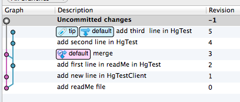
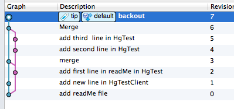
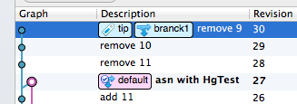
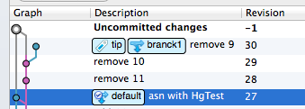
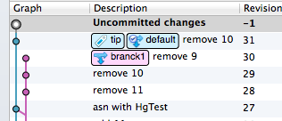
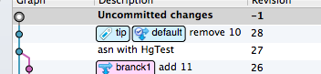
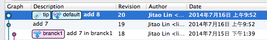
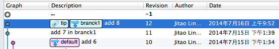

hg（mercurial）中的所有命令都可以通过命令行工具hg help找到具体的使用方法，本教程在其基础上针对产品 的提交流程做必要的解释和示例说明。
查阅帮助文档是使用命令行工具的基础,在学习使用hg之前先要知道如何查阅帮助文档.hg help : 列举所有的hg命令,包括打开的扩展命令.
hg -v help : 更详细的帮助说明.
如果需要了解具体命令的使用帮助,比如commit命令,可以使用命令hg help commit.
同样的hg -v help commit将显示更详细的commit的帮助文档.
如果使用命令行工具的话,log是必不可少的命令.通过log命令可以查看版本记录.hg log : 查看所有的版本记录.hg log filename : 查看某个文件的的修改记录.
hg log -l 10 : -l 参数指定显示的记录数量,当代码库中有大量的log时,显示所有的log有没有太大意义了,我们只关心最新的修改.-f : 当文件被rename或copy后,它的历史记录就不会被显示了,使用--follow命令可以追踪到它们的全部信息.-r : 显示特定版本的信息. hg log -r 18 -r 19,显示18,19两个版本的内容.
-d : 显示指定的日期内容的记录. hg log -d 2014-7-17.
Many date formats are valid. Here are some examples:
- "Wed Dec 6 13:18:29 2006" (local timezone assumed)
- "Dec 6 13:18 -0600" (year assumed, time offset provided)
- "Dec 6 13:18 UTC" (UTC and GMT are aliases for +0000)
- "Dec 6" (midnight)
- "13:18" (today assumed)
- "3:39" (3:39AM assumed)
- "3:39pm" (15:39)
- "2006-12-06 13:18:29" (ISO 8601 format)
- "2006-12-6 13:18"
- "2006-12-6"
- "12-6"
- "12/6"
- "12/6/6" (Dec 6 2006)
- "today" (midnight)
- "yesterday" (midnight)
- "now" - right now
显示文件在版本库中的不同之处.
命令原型:hg diff [OPTION]... ([-c REV] | [-r REV1 [-r REV2]]) [FILE]...-r : 指定比较的版本好.
当有两个REV的参数时,比较这两个版本的不同.
当只有一个REV时,比较当前工作目录与这个版本的不同.
当没有REV参数时,比较本地工作目录与它的父节点的不同.-c : 比较指定版本与它的第一个父节点.
FILE : 指定需要比较的文件.
对于文件的增加,删除,移动,重命令hg都提供了相应的命令工具. 可以用重命名操作的时候,我们禁止使用remove操作.
hg rename [OPTION]... SOURCE... DESThg revert.hg revert.要取消增加的文件,使用hg forget.
函数原型:hg remove [OPTION]... FILE....当代码中出现两个或两个以上的head的时候,需要使用merge命令将代码合并.
命令原型:
hg merge [-P] [-f] [[-r] REV].
-P : 查看是否有需要merge的内容.
-t : 指定使用的merge工具.
-r : 指定merge的版本号.
当自动merge失败时,merge失败的文件会被标记为unresolve状态.这是需要手动merge这些文件.
使用默认的merge工具时,冲突的内容会以下面的格式显示.
<<<<<<< mine
1 add new line in HgTestClient
=======
1 add new line in HgTest
>>>>>>> theirs
<<<<<<< mine 代表本地库的内容。>>>>>>> theirs 代表-r中指定的版本的内容。======= 作为上面两部分内容的分界线。
这些冲突解决后,需要将unresolve状态的文件改为resolve状态.使用命令hg resolve filename.你也可以使用hg resolve -all将所有unresolve状态的文件改为resolve状态.
5.2的修改提交后,需要将次修改集移植到主干.
hg pull /emp5.2
这里可以从本地的5.2的版本库pull代码,也可以从5.2的服务器pull代码.合并
当从5.2pull修改集到主干后,通常会有两个head,这是需要使用merge命令将两个head合并.hg merge
当有两个文件同时有修改时，merge时会产生冲突。如果你使用的是默认的merge工具时,冲突的内容会以下面的格式显示.
<<<<<<< mine
1 add new line in HgTestClient
=======
1 add new line in HgTest
>>>>>>> theirs
<<<<<<< mine 代表本地库的内容。>>>>>>> theirs 代表服务器的内容。======= 作为上面两部分内容的分界线。
对于这些冲突你需要搞清楚它们应该被如何处理. 并保证你的修改是正确的.
冲突解决后,需要对冲突的文件执行resolve操作.hg resove -m filename;
另外你可以使用hg resolve -l 查看需要解决冲突的文件。
除了对冲突的文件需要检查修改的正确性外,对于没有冲突的文件修改,同样要仔细检查. 你可以根据代码的上下文及整个代码的流程对修改的内容进行正确性的验证.并通过运行项目代码进行自测.
所有这些操作的目的都是为了保证merge的代码是可以正确运行的.
提交代码
代码提交使用commit命令,
命令格式: hg commit -m "merge"
-m 选项用来指定提交的描述.
当branch中有多个修改，而我们不需要其中的某个修改时，可以使用backout命令，该命令的功能为撤销某个版本修改。 如下图，从branch中下载了4，5两个版本，但是4的内容并不是我想要的。 可以使用backout命令，撤销4的修改。 
hg mergehg backout -r 4.
hg graft工具可以从分支copy修改，但是并不会merge两个版本. graft使用的是三方合并的方式,和hg的merge是相同的方式.
此功能仅能将本版本库的branch代码执行copy操作.如果修改集为当前版本的分支,或者已经被移植或merge过了,将被跳过.
下面先来讲解次命令的使用.
命令原型:hg graft [OPTION]... [-r] REV...
REV: 指定被移植的修改集版本号,可以指定多个. 如:hg graft -r 29 -r 28.
options:
-r --rev REV [+] revisions to graft
-c --continue resume interrupted graft
-e --edit invoke editor on commit messages
--log append graft info to log message
-D --currentdate record the current date as commit date
-U --currentuser record the current user as committer
-d --date DATE record the specified date as commit date
-u --user USER record the specified user as committer
-t --tool VALUE specify merge tool
-n --dry-run do not perform actions, just print output
如下图：

有两个分支default和branck1，branck1为从其他的版本库B pull的修改, 当需要把branck1 的R29 代码移植到default分支上时，需要几下几部操作:
可以执行命令 hg graft -r 29,
taotao:HgTestClient linjitao$ hg graft 29
grafting revision 29
merging readMe
warning: conflicts during merge.
merging readMe incomplete! (edit conflicts, then use 'hg resolve --mark')
abort: unresolved conflicts, can't continue
(use hg resolve and hg graft --continue)
当前的版本状态如下:

解决冲突
从上面的信息可以看出,merge过程中有冲突.
处理这些冲突,然后使用hg resovle --mark filename命令标记文件冲突已解决.
使用hg graft --continue命令,让graft完成后续的操作.
taotao:HgTestClient linjitao$ hg resolve -m readMe
taotao:HgTestClient linjitao$ hg graft --continue
grafting revision 29
此时的版本状态如下:

删除从主干pull过来的分支版本.
使用strip命令将pull过来的内容删除掉.
从版本记录中发现,版本库B pull过来的代码从28开始,我们要将R28及以后的版本删除.hg strip -r 28
taotao:HgTestClient linjitao$ hg strip -r 28
saved backup bundle to /Users/linjitao/HgTestClient/.hg/strip-backup/73bb095141c3-backup.hg
taotao:HgTestClient linjitao$
此时的版本状态如下:

可以看到,版本库中仅保留了remove 10 的版本,其他的版本都被删除了.
graft命令会将移植版本中修改的内容，作者，修改日期等信息copy到default上，但是并不会将branck1和default两个分支merge。
详细内容：http://www.selenic.com/hg/help/graft
strip命令在下面会介绍.
transplant 命令可以从其他分支或版本库移植一个或多个修改集到本地库,并将这些修改集放在本地版本的顶部.
同时它也会将这些修改集的作者,修改时间等信息自动commit到本地版本库中.
命令格式:
hg transplant [-s REPO] [-b BRANCH [-a]] [-p REV] [-m REV] [REV]...
-s : 指定另外的版本库地址来移植被选择的修改集.
-b : 指定作为head的修改集.
-a : 通常和-b 一起使用,说明移植此分支的所有修改集.
-p : 跳过指定的版本,就是指定的这些版本不移植.可以指定多个,如hg transplant -p 19 -p 20.
-c : 当transplant过程出错时,需要手动将错误内容处理,再执行hg transplant --continue完成后续的处理.
-m :
REV: 指定需要移植的版本号,...表示可以指定多个版本号.如:hg transplant 19 20.
例如,移植到REV的所有版本
hg transplant --branch REV --all
-s --source REPO transplant changesets from REPO
-b --branch REV [+] use this source changeset as head
-a --all pull all changesets up to the --branch revisions
-p --prune REV [+] skip over REV
-m --merge REV [+] merge at REV
--parent REV parent to choose when transplanting merge
-e --edit invoke editor on commit messages
--log append transplant info to log message
-c --continue continue last transplant session after fixing conflicts
--filter CMD filter changesets through comman
If a changeset application fails, you can fix the merge by hand and then
resume where you left off by calling "hg transplant --continue/-c".

假如为主干的修改集，想要将R19的修改内容移植到5.2上， dir_main为主干路径
hg transplant --source dir_main 19。
当移植有冲突时会出现下面的提示时,需要手动的处理这些错误,然后执行 hg transplant --continue完成后续处理.
searching for changes
applying 0a618638a696
patching file readMe
Hunk #1 FAILED at 4
1 out of 1 hunks FAILED -- saving rejects to file readMe.rej
patch failed to apply
abort: fix up the merge and run hg transplant --continue
移植成功后显示0a618638a696 transplanted as 991efe33b72d.
执行上面命令后5.2的版本会出现下图的情况

可以看到除了版本号(Revision)不同外，描述，作者，修改日期都完全相同。
同时transplant自动完成了commit操作。
假如要将主干的修改集R20,R21都移植到5.2上.
hg transplant --source dir_main 19 20
从上面merge失败的报错信息可以发现,transplant使用的是patch的方式移植的代码,当两个版本的文件不一致的会出现merge失败的情况. 这是需要开发人员根据rej文件的内容来手动的merge代码.对于有较多修改的情况,这种情况并不是我们想看到的.这时我们就需要使用graft命令来移植修改集.
相比于graft命令,transplant名字似乎简单一点,但是由于起使用的是patch方式,会出现merge失败的情况.只有在保证代码高度一致的情况下才可以适应此命令.
详细内容：http://mercurial.selenic.com/wiki/TransplantExtension
strip命令的作用是将指定版本的修改集及它的所有子节点从版本库删除.
如果本地有未提交的修改,此操作会被取消,除非你指定了--force参数.
如果你使用了--force,本地的未提交的修改会被忽略掉.
命令原型: hg strip [-k] [-f] [-n] [-B bookmark] [-r] REV...
REV 可以指定多个版本号.
参数说明:
-r : 指定需要删除的版本.
-f : 强制删除修改修改集,并且忽略本地修改.
--no-backup : strip默认的会将删除的修改记录备份到.hg/strip-backup文件中.使用--no-backup后可以取消备份.
-k : strip时不修改工作副本.
options:
-r --rev REV [+] strip specified revision (optional, can specify revisions
without this option)
-f --force force removal of changesets, discard uncommitted changes
(no backup)
--no-backup no backups
-k --keep do not modify working copy during strip
-B --bookmark VALUE remove revs only reachable from given bookmark
strip命令与transplant命令一样,都是hg的扩展功能,因此需要在.hgrc配置文件中增加相应的配置.
[extensions]
strip =
与branch相关的命令有branch,branches.
hg branch [-fC] [NAME] 建立或显示当前分支的名字.
options:
-f --force set branch name even if it shadows an existing branch
-C --clean reset branch name to parent branch name
例:
hg branch 输出iPhone 显示当前分支名字为iphone
hg branch test ,以当前所在的版本为基点,建立一个名字为test的分支.
hg branches [-ac], 列举版本库中的分支
options:
-a --active show only branches that have unmerged heads
-c --closed show normal and closed branches
在开发过程中,经常会出现多个功能同时开发的情况,为了避免提交记录的复杂交替和代码的稳定性.
同时这样可以保证版本的功能比较清晰.比如我们在5.2.50需要提供功能A,而我们在5.2.40的时候已经开始实现此功能.如果我们直接在主干上开发,当我们发布5.2.45版本时,这个版本就会包含功能A的代码,而这个功能此时还没有完成或没有做测试.这必然会影响5.2.45版本的稳定性.甚至可能会出现一些意外的情况.比如兼容性问题.
我们做如下规定:
注:开发人员需要确认开发的分支是否正确. 避免将A分支开发的工作错误的添加到B分支上.